7 Cell Walls and Lipids
Imagine the cell wall as a vital part of a plant’s body, sort of like its skeleton. It’s a sturdy structure that makes up a big part of the plant’s overall mass. In fact, about 70% of the total plant material on Earth comes from plant cell walls.
When you think about trees, for example, most of what you see is their cell walls. If plants didn’t have cell walls, trees would look more like gooey, blobby things rather than the strong and tall giants we’re familiar with.
Think of the cell wall as a bit like the skin of a plant cell. Just like our skin holds us together and gives us our shape, the cell wall plays a similar role for plant cells.
All plant cells have this strong primary cell wall that surrounds them. This wall helps determine the shape and function of the cell. Imagine if a plant cell were like a balloon, and the cell wall was the rubbery part that kept it from getting too big and floppy.
One important job of the cell wall is to make sure the cell doesn’t soak up too much water. It acts like a barrier to prevent the cell from swelling up like a water balloon.
But here’s the cool part: the cell wall isn’t just for protection. It’s also like armor against bad guys. It acts as a tough shield that keeps out pathogens (like plant diseases) and other harmful invaders.
In some cells, they create extra strong walls inside the basic wall. These extra walls are called secondary walls, and they’re like extra layers of protection.
The primary walls, which come first when cells are growing, are pretty thin and not very complex in structure. They’re like the starting point for a cell’s outer layer.
When you have neighboring cells, the part that sticks them together is known as the Middle Lamella. Think of it as a sort of glue that holds the cells together.
Sometimes, after the cells have grown to their full size, they build these specialized secondary walls inside the primary walls. These secondary walls can be super unique and different in how they’re made and what they’re made of.
7.1 Revision on Sugars
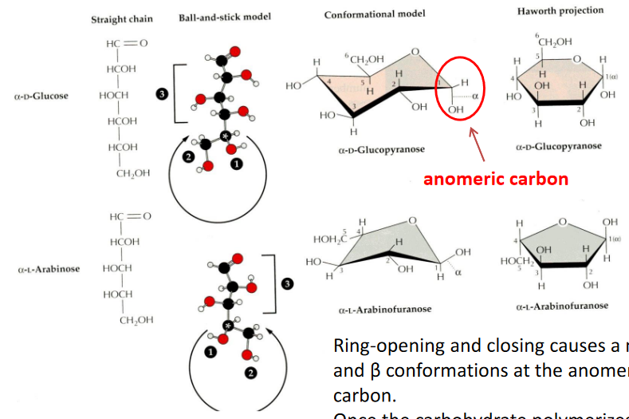
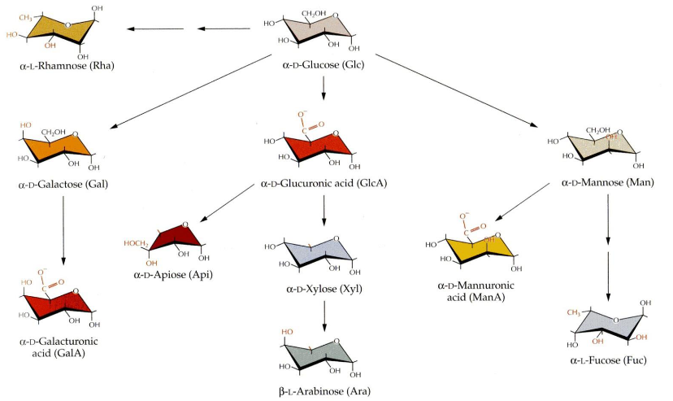
When we talk about sugars, there’s something interesting that happens. You see, these sugars can change their shape, a bit like opening and closing a ring. This change in shape creates two different forms, which we call alpha (α) and beta (β) conformations, at a special carbon called the anomeric carbon.
Now, here’s the twist. Once these sugars join together to make a bigger sugar chain, we can’t change their shape anymore. It’s like they get locked into one of these alpha or beta forms, and they stay that way.
7.1.1 Sugar Polymerization
Sugars, which are like building blocks in the cell wall, connect to each other through a specific carbon called the anomeric carbon and another part of sugar called a hydroxyl group. This connection is known as a glycosidic linkage, and it’s always in the form of a ring.
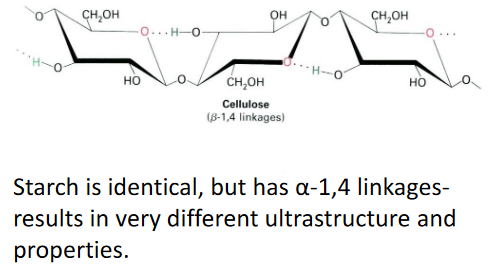
Now, the special thing is that the type of connection is determined by which carbon the hydroxyl group is attached to and whether it’s in the alpha (α) or beta (β) conformation at the anomeric carbon. This makes a big difference in how these sugars link up.
You might think there are endless ways to connect these sugars because there are so many types of sugar pieces and combinations. It seems like it could get super complex. But, luckily, the major components of the cell wall tend to stick to certain patterns, so there’s some order in all this sugar mixing. ## Cell Wall Biomolecules
7.1.2 Cellulose
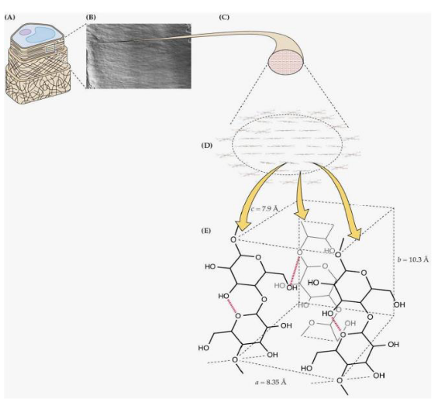
Cellulose is a super common type of sugar in plants. It’s the most abundant one. When these cellulose sugars get together, they form something called paracrystalline microfibrils. These microfibrils are like tiny structures made up of around 36 chains of cellulose all holding hands, or more accurately, they’re bonded together by something called hydrogen bonds.
Each of these cellulose chains is quite long, made up of anywhere from 2,000 to 20,000 individual sugar pieces. That’s a lot of sugars in one chain! The interesting thing is that these chains can start and stop in different places within the microfibril. So, inside one of these microfibrils, there can be thousands of these cellulose chains, all doing their thing. It’s like a big, complex group of sugars working together.
7.1.2.1 Cellulosic Scaffolds
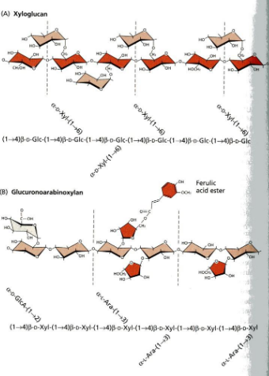
In the plant cell, there’s something really cool happening with a structure called the cellulosic scaffold. It’s like a framework made of cellulose, a type of sugar. But it’s not just plain cellulose; there are other sugars involved, like hemi-celluloses, that act as cross-linking glycans.
These cross-linking glycans are like a protective coating around the microfibrils, which are those tiny cellulose structures we talked about earlier. They also connect to other glycans and bridge the gap between microfibrils.
Now, there are two specific types of these cross-linking glycans: Xyloglucans (XyGs) and Glucoronoarabinoxylans (GAXs). Xyloglucans are long chains made of glucose, just like cellulose, but they have bits of xylose sugar linked at regular intervals. On the other hand, Glucoronoarabinoxylans are also long chains of xylose, but they have side branches that connect to glucuronic acid and arabinose. So, it’s like different types of sugars coming together to create this strong and interconnected structure in plant cells.
7.1.3 Pectins
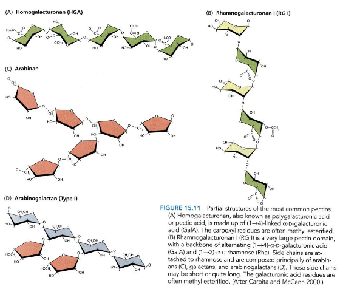
Pectins are some of the most soluble carbohydrates found in a plant’s cell wall. They’re not all the same; in fact, they’re quite diverse. Think of them as a bit like a tangled web – they’re branched and hold a lot of water, making them very hydrated. This unique structure plays a big role in determining how porous or holey the cell wall is.
What makes pectins even more interesting is that they’re packed with a type of sugar called D-galacturonic acid. These pectins are found in high amounts in a part of the cell wall called the middle lamella, and they’re in charge of making sure cells stick together. It’s like they’re the glue that holds plant cells in place.
One more thing about pectins – they can link to each other in a special way, kind of like forming a gel. You might notice this in jams and jellies. When you heat fruit with pectins and then let it cool, they help create that jelly-like texture, giving it the perfect consistency for your favorite spreads.
7.1.4 Structural Proteins
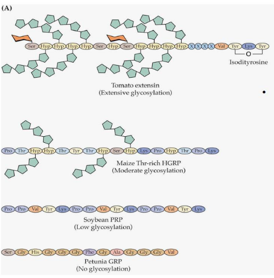
Inside the cell wall, there are special proteins that play important roles in giving the wall its structure. These proteins belong to different classes and are often named after the amino acids that are most common in them.
One class is called Hydroxyproline rich glycoproteins, which includes something called extensins. Then, there are Proline rich proteins and Glycine rich proteins. Another class, Arabinogalactan proteins or AGPs for short, are really interesting because they can be up to 90% carbohydrate, which is like sugar.
Now, these proteins have a job to do. One of their possible functions is to help shape and hold the cell wall in place. Think of them as the builders and architects of the plant cell’s strong outer layer, making sure it’s all put together just right.
7.2 Cell Wall Architecture
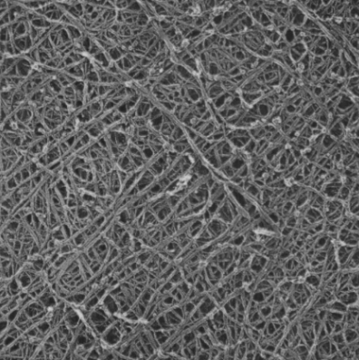
Let’s take a closer look at the primary cell wall’s structure. Imagine it like a well-organized building plan.
The primary cell wall has a fundamental framework made of cellulose microfibrils, which are like strong fibers, and cross-linking glycans that act like connectors. These elements come together to create a sort of scaffold.
Now, this scaffold is surrounded by a network of pectic polysaccharides, which are like a supportive web, giving the cell wall additional structure and texture.
But there’s more to it. Structural proteins play their part by forming a third network within the cell wall. It’s like they’re an extra layer of support, like steel beams in a building.
Lastly, cell walls can be grouped into two main types based on what they’re made of. These differences in composition make them either Type 1 or Type 2 cell walls. Think of it like sorting cell walls into two categories depending on what they’re built from.
7.2.1 Types of Cell Walls
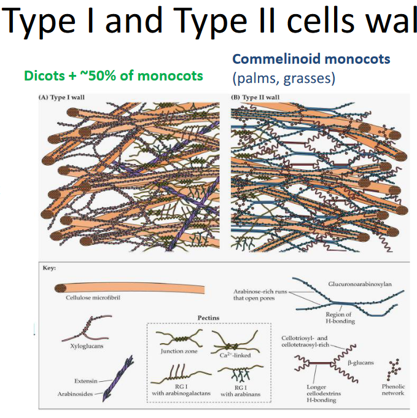
Let’s dive into the two main types of cell walls, Type I and Type II, and see what sets them apart.
Type I Cell Walls
In Type I cell walls, you’ll find something called XyG, which helps to link different parts together. These walls have an extensive matrix of pectin, which acts like a supporting structure. Plus, there are lots of structural proteins, like the builders of the wall, working hard. Interestingly, Type I cell walls don’t have a specific network involving phenolic compounds.
Type II Cell Walls
Now, when it comes to Type II cell walls, they’re a bit different. Instead of XyG, they use GAX to link things up. These walls have fewer pectins, so it’s not as rich in that supportive matrix. Structural proteins are not as abundant as in Type I. What’s unique about Type II cell walls is the presence of a phenolic network, mainly made up of hydroxycinnamic acids. It’s like an additional layer of protection or reinforcement, making these cell walls distinct from Type I.
7.3 Cell Wall Synthesis
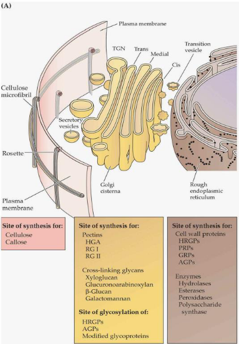
Building a cell wall is a bit like putting together a puzzle where each piece is made in a different factory.
First, we have cellulose, which is like the main building material of the cell wall. This is made right at the plasma membrane, which is like the cell’s outer skin.
Then, there are components like pectins and hemicellulose. These are produced in a part of the cell called the Golgi apparatus. Think of the Golgi apparatus as a factory that specializes in making these important pieces.
Proteins, on the other hand, are created in the endoplasmic reticulum. Once they’re made, they get a little extra sugar added to them in the Golgi apparatus, a process called glycosylation.
Now, to put everything together, the cell uses tiny transportation vehicles called vesicles. These vesicles carry the different pieces, including cellulose, pectins, hemicellulose, and the modified proteins, to where the cell wall is being formed. It’s like a well-coordinated team effort to construct the cell wall.
7.3.1 Building Cellulose Microfibrils
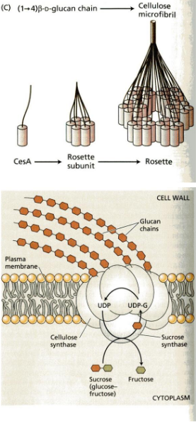
The process begins at the plasma membrane, which is like the cell’s outer skin. Here, there’s a special protein called cellulose synthase. It’s like a tiny factory that creates cellulose.
This cellulose synthase makes what we call rosettes. These are like groups of machines working together, and they take a special type of sugar called UDP-glucose, which comes from sucrose, and turn it into cellulose.
To help guide these rosettes, microtubules come into play. Microtubules are like tracks that direct the movement of the cellulose synthase complexes, making sure they create cellulose in the right places. It’s a bit like a train track for these cellulose-making machines.
7.3.2 Incorporating New Cell Wall Polymers
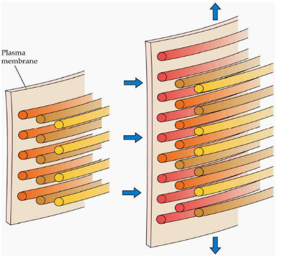
Plant cells have a unique way of growing. They can get much larger – sometimes thousands of times their original size – while keeping their cell wall thickness constant. The force driving this expansion is called turgor pressure, a bit like blowing up a balloon. It pushes the cell outward.
Now, the rate at which a cell grows is carefully controlled. It’s like a well-managed construction project. The cell regulates its growth by a process called wall loosening. This means it separates the microfibrils, which are like tiny building blocks, and adds new polymers. These polymers are fresh materials that help the cell wall expand. So, it’s like taking apart some bricks and adding new ones to make the wall bigger.
Most cells grow evenly, like inflating a balloon, but some have a different style. They display tip growth, which is when only one end of the cell gets longer. Think of it like a balloon that’s being inflated more at one end than the other. This tip growth happens in special cells like root hairs and pollen tubes, and it’s essential for their functions.
7.3.3 Cell Walll Loosening
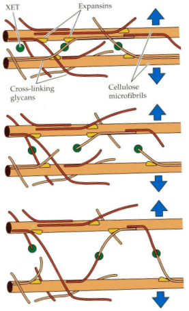
There are special enzymes involved in this process. One of them is called Xyloglucan endotransglycosylase, or XET for short. XET can do something really interesting – it can cut and reattach XyG chains. This ability allows for a temporary slipping or shifting of microfibrils, those tiny building blocks in the cell wall. It’s like rearranging bricks to make space for expansion.
Another set of enzymes, called Expansins, have a less clear function, but they seem to play a role in breaking hydrogen bonds between cellulose and cross-linking glycans. It’s a bit like dismantling the connections between parts of the cell wall, which helps in cell expansion. These Expansins are pretty unique because they are the only enzymes known to cause cell expansion in a lab setting. So, they have a special job in the cell wall loosening process.
7.4 Secondary Cell Walls
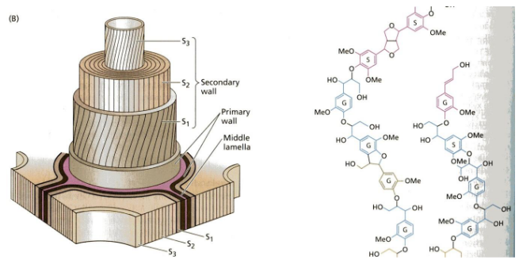
After the primary cell wall is in place, certain cells go a step further by creating something called secondary cell walls.
These secondary walls are a bit different. They contain more cellulose compared to the primary wall, making them stronger and more rigid. They are also filled with a substance called lignin, which is a complex polymer made from smaller building blocks known as phenylpropanoid subunits.
Lignin forms a hydrophobic, or water-repelling, network that is physically interwoven with the matrix polysaccharides in the cell wall. This makes the secondary wall tough and resistant. It’s like adding a protective layer to the cell.
However, this toughness has a downside. It makes plant materials less digestible. So, while the secondary cell wall provides extra strength, it also makes it harder for animals to break down and digest the plant.
7.4.1 Importance of Cell Walls
Cell walls are actually quite important for us, and here’s why:
Firstly, they serve as a massive carbon sink. This means that they can store a lot of carbon, which is essential for addressing climate change. When we think of carbon storage, we might picture vast forests and woodlands – and indeed, wood, which is made up of cell walls, is a significant contributor to this carbon storage.
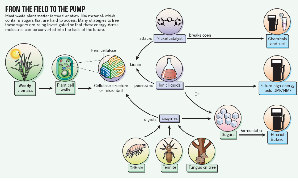
We also rely on cell walls for a variety of practical purposes. They are used in the construction of buildings and as fuel sources. Paper is another everyday item that wouldn’t exist without cell walls. Additionally, cell walls are considered valuable feedstock for biofuels. When we’re talking about biofuels, we mean fuels made from natural resources, like plant material, rather than fossil fuels.
Looking ahead, the field of biotechnology is exploring ways to make cell walls more accessible and easier to digest. This opens up exciting possibilities for the future. It could lead to innovations in energy production, materials, and even new ways of using plants in our daily lives. So, cell walls have a big role in both the present and the future.
7.5 Lipids
Plant lipids are a diverse group of molecules that really like to hang out in non-water-based solvents, which makes them different from many other substances in plants.
Now, these lipids have some important jobs in the plant world. For starters, they’re crucial for building cell membranes. The two main types of lipids involved in this are phospholipids and glycolipids. Together, they create a kind of waterproof barrier around cells, like a protective shield.
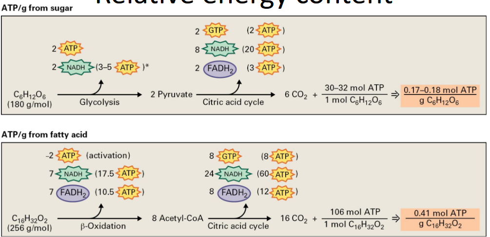
Lipids also serve as energy storage units in plants. When you burn lipids, you get more energy than from carbohydrates, which makes them super efficient for energy storage. And because they’re not very water-friendly, they don’t trap as much water as carbohydrates, so they provide more energy for their weight.
There’s also a plant called Elaeis guineensis, which is the most productive oil crop globally. It’s like the superstar of oil production in the plant kingdom.
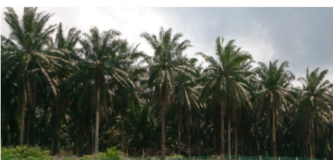
Additionally, plants use fatty acids found in lipids to create waxes that coat and shield them from the environment. Think of it like plants wearing a protective coat to stay safe.
Lastly, lipids have a role in creating jasmonic acid, which helps plants defend themselves against insects. So, they’re not just structural and energy storage molecules; they’re also part of a plant’s defense system.
7.5.1 Lipid Structure and Naming
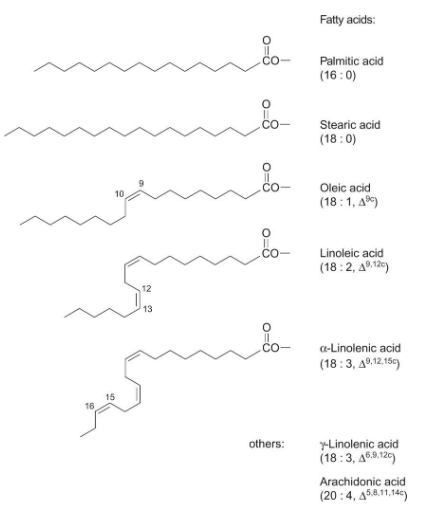
Lipids often consist of fatty acids joined to glycerol. Fatty acids are named in a specific way. Their name tells us about their structure.
The name of a fatty acid tells us two things: the number of carbon atoms it has and the number and position of double bonds. For instance, if a fatty acid has 18 carbon atoms and 2 double bonds, it would be called “18:2.”
The subscript in the name also indicates where these double bonds are located in unsaturated fatty acids. If the double bonds have a “cis” orientation, it’s denoted as “c,” while “trans” orientation is labeled as “t.” Trans isomers are pretty rare in nature.
So, when you see a name like “18:2 c,” it means the fatty acid has 18 carbon atoms, 2 double bonds, and the double bonds have a “cis” orientation. This naming system helps scientists understand the structure of different fatty acids in lipids.
7.5.2 Glyceroglycolipids and Glycerophospholipids
Plant cells use different types of lipids to build their membranes, and this has some interesting implications.
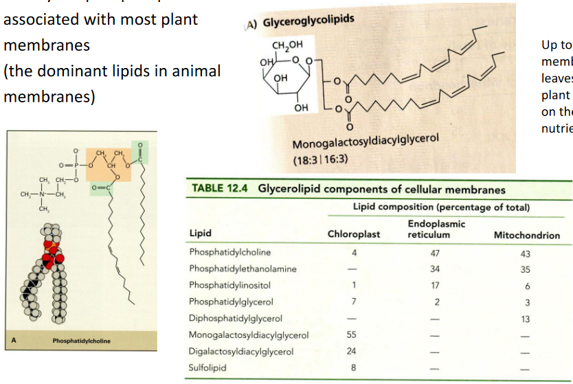
First, there are glycerophospholipids. These are found in most plant membranes and are also the dominant lipids in animal membranes. They make up a significant part of the structural foundation of these membranes.
Then, there are glyceroglycolipids. These are especially associated with chloroplast membranes, which are the green structures in plant cells responsible for photosynthesis. It’s like they have their own special kind of lipids.
What’s intriguing is that in some plant leaves, up to 75% of the total membrane lipids are glyceroglycolipids. This might be a clever adaptation because it reduces the plant’s reliance on a valuable nutrient, phosphate. By using glyceroglycolipids, plants might be saving precious resources, and this could be particularly important in nutrient-poor environments. So, the choice of lipids in membranes can have a big impact on how plants manage their resources.
7.6 Fatty Acid Biosynthesis
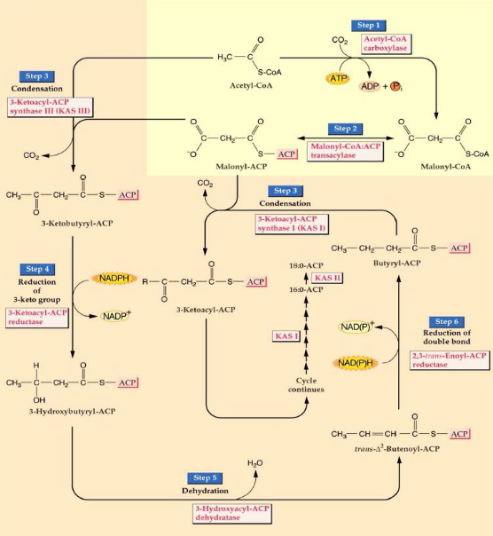
The process of fatty acid biosynthesis happens through a series of steps, involving cycles of adding two carbon atoms at a time.
The first critical step starts with acetyl CoA, a molecule with two carbon atoms. It gets transformed into malonyl CoA, which has three carbon atoms. This step is crucial because it commits the plant to making fatty acids.
The malonyl group is then moved to another molecule called acyl carrier protein (ACP).
Malonyl ACP combines with acetyl CoA, and this process releases carbon dioxide (CO2).
In the following steps, the keto group in the molecule is reduced to create a hydrocarbon. Malonyl ACP is mixed with the substrate to add another two carbon atoms. These new carbons are then reduced, and the process continues, with malonyl ACP being added repeatedly. This cycle continues until we have a fatty acid chain with 16 to 18 carbon atoms.
These condensation reactions, where molecules come together to build the fatty acid, are made possible by an enzyme called 3-ketoacyl-ACP synthase, often referred to as KAS.
7.6.1 Acyl Carrier Protein
During the process of fatty acid synthesis, special carrier proteins come into play to transport the intermediates, which are the in-between products of this complex process.
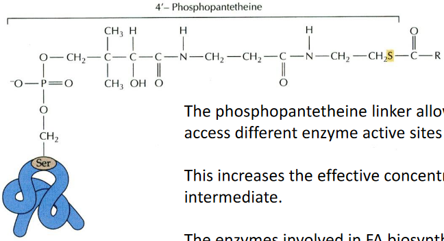
One of these carrier proteins is called acyl carrier protein (ACP). It’s a relatively small protein, consisting of 80 to 90 amino acids. What’s really cool about ACP is that it has a phosphopantetheine linker. This linker acts like a flexible bridge, allowing the fatty acid intermediates to move around and access different enzyme sites where they undergo further processing. It’s a bit like a transportation system within the cell.
To make things even more efficient, the enzymes involved in fatty acid biosynthesis work together as a team. They form a complex called Fatty Acid Synthase, where all the active sites are close to each other. In plants and bacteria, the enzymatic activities are organized into separate chains, while in animals, they’re part of a single, long protein chain. Regardless of this organizational difference, the reactions themselves are essentially the same. So, these carrier proteins and enzyme complexes are like choreographers in a well-coordinated dance, ensuring that the fatty acids are made efficiently and accurately.
7.6.2 KAS Isoforms
Creating new carbon-carbon bonds is a key part of making fatty acids, and different enzymes are responsible for forming these bonds.
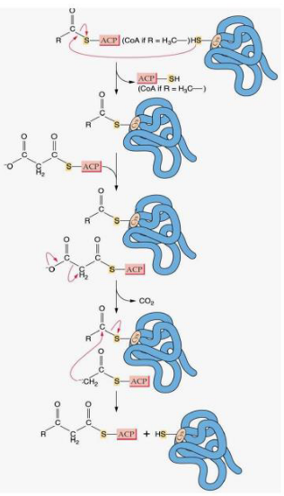
In all plants, you can find three versions, or isoforms, of an enzyme called 3-ketoacyl-ACP synthase. These enzymes are responsible for what we call “condensing,” which is the process of bringing different pieces together to form the carbon-carbon bonds.
Each of these isoforms has a specific job because they are picky about the types of molecules they work with.
KAS III: This one prefers to work with acetyl CoA, a molecule with two carbon atoms. It’s like the starter in the fatty acid-making process. When it gets going, it initiates the whole fatty acid synthesis.
KAS I: KAS I is most active when it’s dealing with acyl ACPs that have carbon chains ranging from 4 to 14 carbon atoms. It’s like the middleman in the process, dealing with medium-sized pieces.
KAS II: KAS II, on the other hand, only works with long carbon chains, specifically those containing 10 to 16 carbon atoms. It’s like the closer, completing the final stages of fatty acid synthesis.
These isoforms are like a team of specialized workers, each with their specific role, ensuring that fatty acids are made correctly with the right carbon-carbon bonds.
7.6.3 Making Long Chain Fatty Acids
Producing long-chain fatty acids is quite an intricate process and relies on specialized elongase systems.
Some fatty acids can be quite long, with chains extending to C20 and C22, while waxes are made from even longer C26 to C32 fatty acids.
In the plastid, where fatty acid synthesis mainly takes place, the process typically yields C18 fatty acids, but what about the longer ones? Well, that’s where a different system comes into play. To create these longer fatty acids, a cytosolic membrane-bound elongase system is used.
This elongase system involves a series of reactions similar to those in fatty acid synthesis, but it doesn’t require the acyl carrier protein (ACP). Instead, there are specific enzymes involved:
- KCS – 3-ketoacyl CoA synthase
- KR – 3-ketoacyl CoA reductase
- DH - 3-ketoacyl CoA dehydrogenase
- ER – enoyl-CoA reductase
These enzymes work together to extend the fatty acid chain. However, these elongase systems are relatively less understood compared to other parts of fatty acid metabolism, making them an interesting area for further research.
7.6.4 Unusual Fatty Acids
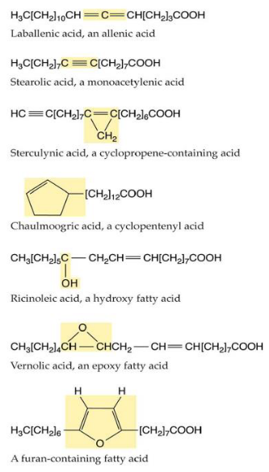
The world of fatty acids is incredibly diverse, with hundreds of unusual ones that aren’t found in many plant species. What’s intriguing is that these unique fatty acids are often discovered in the seed oils of only a few specific plant species. This distribution pattern suggests that these fatty acids may have evolved independently multiple times, a phenomenon known as convergent evolution.
These unusual fatty acids serve various purposes, and one of them might be defense. Some of these fatty acids could be toxic or difficult for animals to digest, serving as a way to protect the plant from herbivores.
Interestingly, the enzymes responsible for making these unique fatty acids closely resemble the standard fatty acid biosynthesis enzymes. It’s as though evolution has found it relatively easy to modify these enzymes to perform new tasks. For example, it appears that evolving the ability to add hydroxyl groups (a type of oxygen and hydrogen combination) to a fatty acid chain can happen from enzymes that were originally involved in adding double bonds. This adaptability in enzyme function is part of the amazing diversity of life and the unique ways that plants adapt to their environments.
7.7 Stopping Fatty Acid Biosynthesis
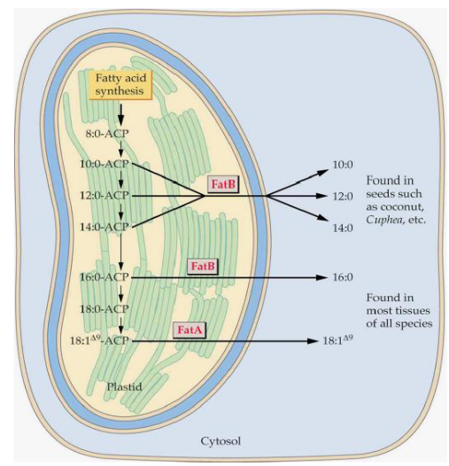
The process of fatty acid biosynthesis doesn’t go on forever; it has a planned ending. To wrap it up, there are specific enzymes that come into play.
In plants, there are two types of thioesterases, which are enzymes that help complete the process:
FatA: This thioesterase is most active with a fatty acid called 18:1$$9. It’s like the one in charge of finalizing the longer unsaturated fatty acids.
FatB: On the other hand, FatB is more active with shorter and saturated fatty acids. It’s like the specialist for shorter fatty acids.
Now, once the fatty acid has been properly prepared, it’s time to move it out of the plastid, which is a part of the cell where this whole process takes place. However, the exact mechanism for how this is done remains a bit of a mystery, as it’s not entirely clear how the fatty acid is targeted and transported out of the plastid. It’s like the final stage of this journey still has some secrets to be uncovered.
7.7.1 Plant Fatty Acid Biosynthesis in the Grander Scheme
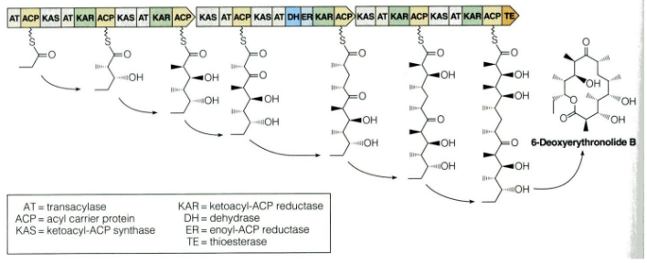
The process of fatty acid biosynthesis in plants is a part of a broader field of biochemistry, and it shares some common features with other organisms.
One fascinating thing is that the biochemistry of fatty acid biosynthesis is quite similar across different life forms. In animals and fungi, for instance, this process takes place in the cytoplasm, which is a part of the cell, and it’s orchestrated by a giant enzyme called fatty acid synthase. This mega-enzyme handles all the different enzymatic activities required for fatty acid production.
But what’s even more interesting is how variations of this fatty acid biosynthesis pathway are used by bacteria and fungi to create various compounds called polyketides. These polyketides are a diverse group of molecules, and some of them are famous for being antibiotics. This means that the same pathway plants use to make fatty acids can be adapted to produce a wide range of other useful compounds in different organisms.
7.7.2 Importance of Fatty Acid Desaturation
Fatty acid desaturation, or the process of adding double bonds to fatty acid chains, plays a crucial role in maintaining the right properties for various functions in plants.
When cis double bonds are introduced into the fatty acid chains, they create “kinks” or bends in the chains. These kinks are like little twists in the fatty acid structure, and they have a significant impact. They reduce the tight packing of the chains, making the membranes more fluid. This increased fluidity is essential for the proper functioning of cell membranes.
For example, consider stearic acid, a fatty acid with no double bonds (18:0). It has a melting point at 69 degrees Celsius. In contrast, oleic acid, which has one double bond (18:1Δ9), has a much lower melting point at 13.4 degrees Celsius. This difference in melting points is because of the kinks created by the double bond, which makes the oleic acid more fluid at lower temperatures.
In most plant tissues, more than 75% of the fatty acids are unsaturated, meaning they have these kinks due to double bonds. To achieve this, many of the 18:0 fatty acids, which are saturated (no double bonds), are converted into 18:1Δ9. This conversion is carried out by an enzyme called soluble stearoyl-ACP desaturase.
7.7.2.1 Arabidopsis Fab2 Mutant
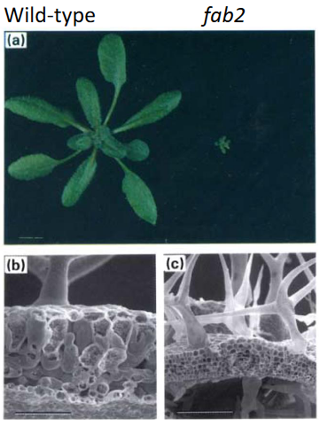
This mutant has a problem with its stearoyl-ACP Δ9 desaturase, an enzyme responsible for adding double bonds to fatty acids. As a result, the fab2 mutant has higher levels of 18:0 fatty acids, which are saturated and lack double bonds.
The most interesting thing about this mutant is its appearance. It has a miniature phenotype, which means it doesn’t grow as big as regular plants. Specifically, the mesophyll and epidermal cells in this mutant fail to enlarge, which affects its overall size and shape.
However, there’s a twist to this story. When these mutant plants are grown at a higher temperature, around 35 degrees Celsius, some of the issues with their size can be partially overcome. This happens because the increase in temperature makes the cell membrane more fluid, which helps the cells function better. It’s like how some things work smoother when it’s warmer.
7.7.3 More on Desaturases
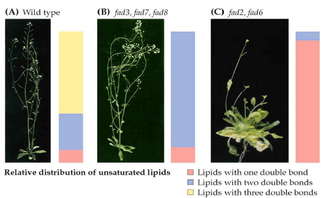
When it comes to fatty acid desaturases, there’s something interesting to note. Most of these enzymes are found in the cell’s membranes, and they typically work on glycerolipids, which are molecules found in the plastid.
To create glycerolipids in the plastid, a fatty acid is moved from acyl-ACP to glycerol-3-phosphate. This process is like assembling the building blocks for these lipids.
In plants, like Arabidopsis, there are seven more desaturases known as FAD2-FAD8. These enzymes are located in the membranes of the chloroplasts or the endoplasmic reticulum (ER), another part of the cell. What makes them special is that they add additional double bonds to the fatty acids. These extra double bonds have a big impact on the physical properties of the membranes they create.
Studying these enzymes biochemically can be quite challenging, but scientists have managed to create genetic mutants for all of them. Interestingly, when you disrupt the function of these enzymes, the plant becomes unable to grow through photosynthesis. Instead, it relies on external sources of energy like sucrose to survive. This highlights the critical role of polyunsaturated membranes, which these enzymes help create, in the photosynthesis process. So, these desaturases play a vital role in the plant’s ability to capture and use light energy.
7.8 Storage Lipids
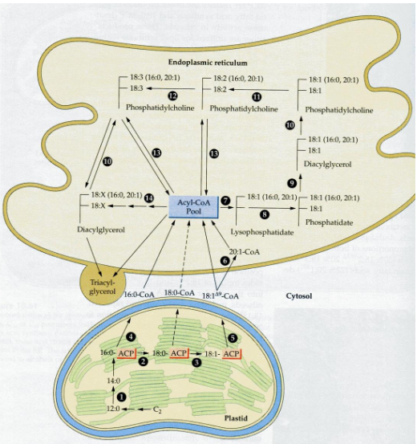
When plants create storage lipids in their seeds and pollen, the process is quite fascinating.
First, the fatty acids they produce in the plastid are transported out of the plastid to the endoplasmic reticulum (ER), another part of the cell. Once there, these fatty acids become part of a dynamic pool. This means they can move around and undergo various acyl exchange and transferase reactions, essentially shuffling themselves around.
Finally, these fatty acids are gathered and packed into subcellular organelles known as oil bodies. It’s like the plant’s way of storing these valuable molecules in a secure and organized manner. These oil bodies are the plant’s storage vaults for energy-rich triglycerides (TAGs), where they’re saved until they’re needed, such as for seed germination or pollen growth. So, it’s a well-coordinated process, from fatty acid creation in the plastid to storage in oil bodies.
7.8.1 Oil Bodies
Oil bodies, which are like storage compartments for fats in plant cells, are structured in an interesting way.
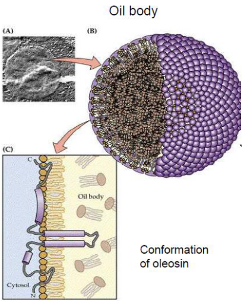
These oil bodies are enclosed by a single-layer membrane. This membrane is special because it’s made up of phospholipids, and it has a unique orientation. The hydrophilic (water-attracting) head groups of these phospholipids face the cytosol, which is the watery interior of the cell. Meanwhile, the acyl moieties, which are the hydrophobic (water-repelling) parts, interact with the hydrophobic TAG (triglyceride) cargo, which is essentially the stored fat.
In addition to the membrane, there’s a small protein called Oleosin that plays a key role. Oleosin is embedded within this monolayer membrane. It has a hydrophobic middle domain, which is like the part of the protein that prefers the fatty TAGs. This middle domain interacts with the stored fats in the oil bodies, helping to regulate the size of these storage compartments. So, the unique structure and the presence of Oleosin make these oil bodies an efficient and well-organized storage system for fats in plant cells.